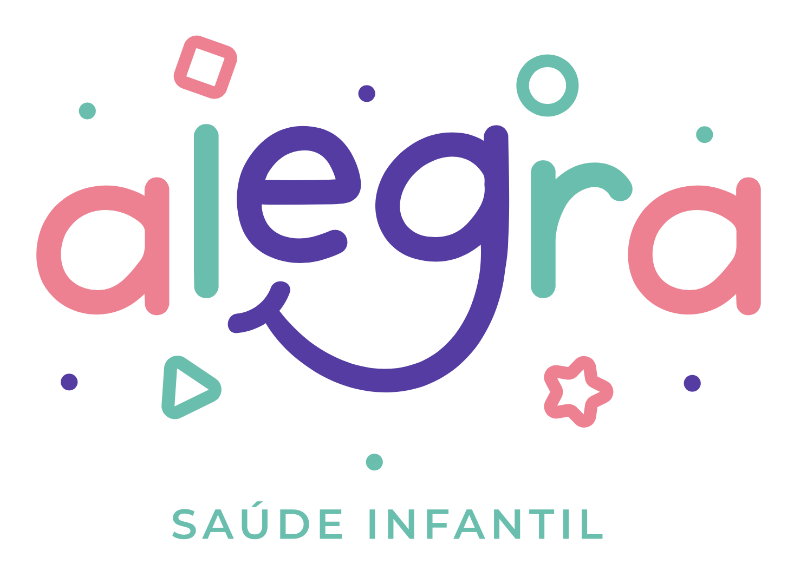

Odontopediatria • Neuropsicologia • Psicopedagogia
Agendar ConsultaA Alegra Saúde Infantil é uma clínica multidisciplinar dedicada ao cuidado integral das crianças. Nossa missão é promover o desenvolvimento saudável com atendimento humanizado e equipe especializada.
Atendimento odontológico para bebês e crianças.
Correção precoce do crescimento dental.
Procedimento para correção do freio lingual.
Avaliação do frênulo lingual em recém-nascidos.
Acompanhamento do desenvolvimento cognitivo.
Tratamento de dificuldades de aprendizagem.
Especialista em ortodontia infantil e frenectomia.
Avaliação do desenvolvimento infantil.
Intervenção em dificuldades escolares.
"Atendimento maravilhoso! Meu filho adorou ir ao dentista."
— Paciente"Profissionais extremamente cuidadosos e atenciosos."
— Paciente